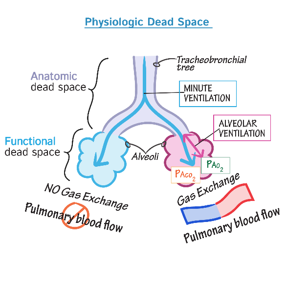

- Dead space = regions of the airways that are ventilated but no gas exchange occurs.
- Physiologic dead space = anatomic dead space + alveolar dead space
- Anatomic dead space
- *Air in the conducting airways of respiratory system that does NOT participate in the gas exchange.
- Not all of the inspired air reaches the alveoli.
- Inhaled fresh air mixed with expired air in anatomical dead space.
- Alveolar or functional dead space
- *Air in the respiratory zone that is ventilated but does NOT participate in gas exchange.
- Due to lack of blood flow to those alveoli.
